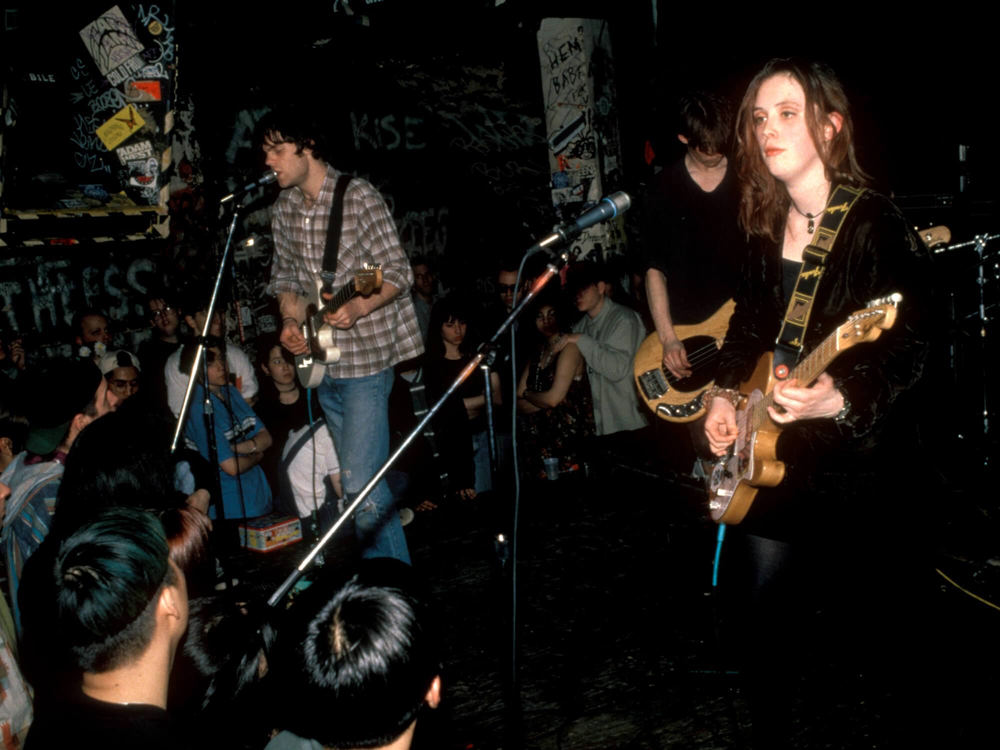
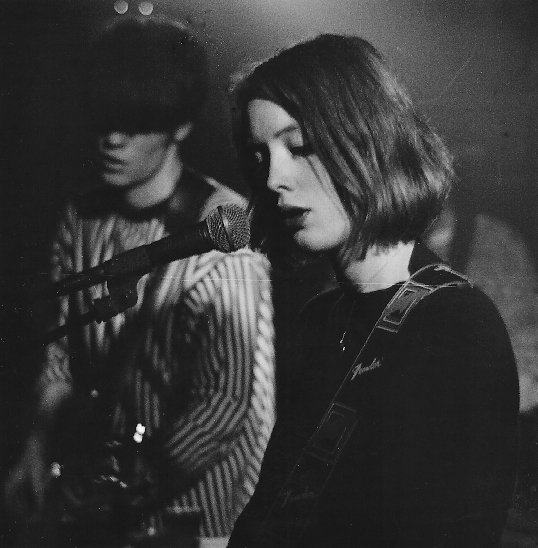

Who are Slowdive?
A story of mass critique, crushed relationships, and new beginnings
Rachel Goswell can’t pinpoint the exact moment the music press turned on Slowdive. But she knows it was sometime between 1991, when Melody Maker described an early EP as “impossible, immaculate and serene”, and 1993, when a writer from the same publication said he would “rather drown choking in a bath full of porridge” than listen to their music again.
“It was the first album, wasn’t it?” she asks her bandmates. This is the first time the five of them have done an interview together since the mid-90s, when their career, at first so bristling with potential, fizzled to an end. “It was definitely a really quick turnaround,” nods guitarist Neil Halstead. It was a vicious one, too.
Both Goswell and Halstead were barely out of school when they formed Slowdive in 1989, recruiting drummer Adrian Sell (who left six months later, and was replaced by Simon Scott) and his friend Nick Chaplin on guitar. Christian Savill was the only person to respond to an advert for a female guitarist, so they hired him to complete the lineup.
The band’s woozy, immersive early EPs were met with widespread acclaim. Theirs was a wall of noise you could sink into; a soundscape where no one instrument – not even the voice – was given special billing. There were melodies in there, but they were elusive and unshowy, much like the band’s members. Slowdive were shy, self-effacing teenagers who were, Halstead says, “semi-embarrassed” by the pedestal they were put on. And then, without much warning, they were booted off it
Almost as soon as it was given a name, shoegaze – so called because of the bands’ tendency to look down at the floor during live shows – became what Goswell describes with a tone of faux self-pity, “the genre of ridicule”. Slowdive’s introspective stage presence was rebranded as self-indulgent and superior, and they were dismissed as middle-class musicians with nothing to say. Manic Street Preachers’ Richey Edwards declared, “I hate Slowdive more than Hitler,” and the band became an easy target for derision. In a world in which NME and Melody Maker were the major tastemakers for anyone who cared about guitar music, it was no longer cool to be a Slowdive fan.
“It almost overtook the music,” says Chaplin, “in that you’re trying to put out records, you’re doing it seriously, and then every week you’ve got this constant mocking in the press.” The final death knell came during a show in Coventry, when Savill looked out into the audience, “and there was a woman just mopping the floor.” Chaplin remembers it, too. “That’s when I thought: ‘I’d better get a job.’”
Although Goswell seems largely unfazed by the ordeal – “People had just moved on, hadn’t they?” she says with a shrug – there was one aspect to the backlash that still infuriates her: the assumption that “we were all really, really rich”. It was, she insists, “a load of bollocks. I don’t know why they thought we were so posh. None of us are from rich backgrounds, none of us went to private schools. That side of it was really frustrating. It wasn’t helped by the fact that you two both had classic cars,” she says, gesturing towards Halstead and Chaplin, “and we posed for a photo with those.”
It wasn’t helped either by the arrival of Britpop. Bands such as Oasis, Blur and Suede brought a punchy directness that made shoegaze seem, well, a little bit fey. There was a machismo in their music, too. “It was very laddy,” says Goswell of the Britpop scene. Shoegaze, adds Halstead, “wasn’t necessarily about rock posturing. It wasn’t foot-on-the-monitor stuff, it wasn’t macho stuff.”
By the mid-90s, macho stuff was what was selling records. Labelmates Oasis, as leaders of the erupting Britpop scene, became one of Creation Records’ most lucrative acts, while Slowdive were increasingly a source of frustration. Creation’s founder, Alan McGee, hauled the band into a meeting and told them that their next record must be a pop record. Did they take his orders on board? “No, not at all,” Halstead says, bluntly. “We weren’t capable of making a pop record at that point.” Instead, they made Pygmalion, an ambient, experimental step towards electronic music, and about as far from pop as it’s possible to get. A week after its release in February 1995, Creation dropped Slowdive, and they broke up.
Still, Halstead is adamant the band had run its course. “We had a pretty good time for six years. I don’t think we ever felt that we were short-changed in terms of getting the audience that we deserved. When we got dropped by Creation, we’d all, in a personal way, reached the end of our time.” Goswell splutters out a somewhat loaded laugh. She and Halstead were in a relationship when Slowdive formed, and their break-up was, by all accounts, a tricky obstacle for the band to navigate. “We certainly had,” she says.
The group’s hesitancy to reunite, though, wasn’t because of fractured relationships – those had long since been repaired by the time 2014 rolled around – but a refusal to believe how immensely popular they had become in the meantime. “People were telling us: ‘There’ll be tons of people who want to see you, it’s gonna be really successful, your appeal’s grown,’” Chaplin says. “And we were like, ‘Really?’ I think we still have a bit of a hangover from the 90s.
Even though the evidence is there in front of us, we don’t necessarily believe it.” Eventually, though, an offer to perform at the Primavera Sound festival in Spain – and the discovery that “we didn’t all hate each other when we were in the same room together” – led to the reunion fans had been hoping for. When they walked out onstage, says Scott, it was “to 25,000 people, and we all had a little cry”.